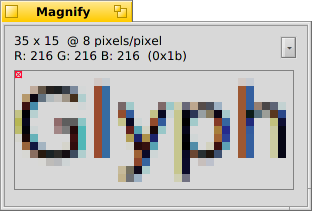

Aspetto
Aspetto
| Deskbar: | ||
| Percorso: | /boot/system/preferences/Appearance | |
| Impostazioni: | ~/config/settings/system/app_server/appearance ~/config/settings/system/app_server/fonts |
Le preferenze in Aspetto permettono di cambiare alcuni aspetti visivi di Haiku .
 Tipi di carattere
Tipi di carattere

Haiku definisce tre tipi di caratteri standard per il suo aspetto: testo normale, grassetto e a spaziatura fissa. Per ognuno di essi puoi definire il tipo di carattere da utilizzare e la dimensione. Oltre a questi, puoi definire anche il tipo di carattere da utilizzare per i menu.
Installare nuovi tipi di carattere
Nuovi tipi di carattere che non sono aggiunti in quanto parte di un pacchetto .hpkg possono essere aggiunti copiandoli in una sottocartella definita in base alla tipologia (postscript oppure truetype) nella rispettiva cartella non-packaged (consulta il paragrafo Schema del File System). Per i font TrueType:
| /boot/system/non-packaged/data/fonts/ttfonts/ | per i tipi di carattere che saranno disponibili a tutti gli utenti. | |
| /boot/home/config/non-packaged/data/fonts/ttfonts/ | per i tipi di carattere che saranno disponibili solo all'utente corrente. |
Colori

Nella prima tab, , si possono cambiare i colori di diverse parti dell'interfaccia utente. Il colore accetta anche drag&drop da altri programmi, permettendo di prendere colori da, per esempio, WonderBrush, Icon-O-Matic o dal pannello di Sfondi.
Decoratori di Finestra

I decodatori determinano l'aspetto delle finestre e degli elementi dell'interfaccia grafica. Haiku è distribuito con un solo decoratore, ma è possibile cercarne e installarne di altri. Una volta fatto, essi saranno disponibili nell'apposito menu a tendina.
Il decoratore predefinito di Haiku consente di personalizzare lo stile delle frecce nella barra di scorrimento: una sola freccia ad ognuna delle estremità per risparmiare un po' di spazio, o una doppia freccia — come in BeOS — che consente potenzialmente di diminuire il movimento del mouse durante lo scrolling...
Antialias

La tab consente di personalizzare diversi aspetti di come gli oggetti sono riportati sullo schermo.
Hinting dei glifi
Quando è attivato, i caratteri sono allineati in un modo che i loro limiti verticali e orizzontali siano esattamente tra due pixel. Il risultato è un contrasto perfetto, specialmente sul bianco e nero. Il testo appare più nitido. È disponibile anche un parametro solo per i tipi di carattere , particolamente adatto per i dispositivi con una bassa risoluzione, come i netbook. Caratteri di dimensioni ridotte possono presentare un effetto sgradevole, con l'hinting attivat. D'altra parte, quando attivo, anche l'aspetto dei caratteri negli editor di testo e nelle finestre di terminale risulta migliore.
Osservate le differenze che si hanno attivando o disattivando l'hinting in questi due screenshot:
 Hinting: disattivato |  Hinting: attivato |
È opportuno notare che, in questa pagina, tutti gli screensot dell'applicazione Magnify sono stati ottenuti con diverse impostazioni attivate. In questo modo, puoi farti una idea molto precisa del loro impatto confrontando, ad esempio, il grassetto sulla tab gialla del titolo della finestra oppure il testo "33 x 15 @ 8 pixels/pixel".
Tipo di Antialias
Un'altra tecnica per migliorare l'aspetto degli oggetti sullo schermo è l'antialia, supportanto per tutti gli elementi vettoriali presenti su schermo, compreso il testo. Il principio è quello di sfumare le linee nette con dei colori intermedi. Ci sono due modi possibili per ottenerlo:
per cambiare l'intensità dei pixel sui bordi.
fa un lavoro ancora migliore, specialmente su schermi LCD ad alta risoluzione. Invece di alterare l'intensità di un pixel, cambia il colore in modo da spostare il bordo di una frazione di pixel. Ciò è possibile per via del fatto che lo schermo LCD produce ogni pixel attraverso tre componenti rossa, verde e blu prossime tra di loro.
Ecco due screenshot con le due modalità sopra riportate:
Scala di grigi, Hinting: disattivato |  Componenti LCD, Hinting: disattivato |
L'antialias basato sulle componenti LCD aggiunge un impercettibile alone agli oggetti, qualcosa che alcuni utenti potrebbero non tollerare. In Haiku puoi miscelare le due componenti e trovare il giusto bilanciamento agendo sul selettore apposito.
Se attivi l'hinting dei glifi e l'antialias mediante componenti LCD (modificando il codice sorgente e ricompilando Haiku), questo è ciò che otterrest rispetto all'hinting pià l'antialias in scala di grigi:
Scala di grigi, Hinting: attivato | Componenti LCD, Hinting: attivato |
Nel fondo del pannello ci sono due pulsanti:
| ripristina tutto ai valori predefiniti | ||
| ripristina i valori presenti nel momento in cui hai avviato il pannello Aspetto. |